SOC165 · Possível payload de injeção SQL detectado
- Categoria
- Ataques Web
- Caso
- SOC165
- Registro
- Comprometimento não confirmado
Resumo
Investigação de um alerta de possível tentativa de injeção SQL em um servidor web.
Passo a passo da investigação
Objetivo
Documentar a análise do alerta de possível tentativa de injeção SQL, correlacionar os indicadores disponíveis e registrar as próximas ações recomendadas.
1. Validar o alerta e abrir o ticket
Acesse a aba Investigation Channel e confira os detalhes do incidente.
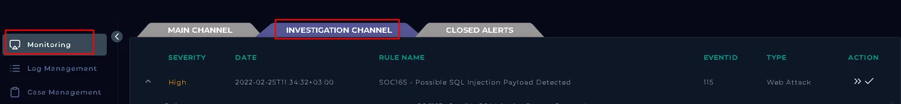
Registre o incidente criando um ticket.
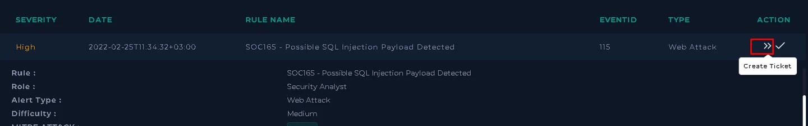
2. Inspecionar a URL solicitada
Copie o campo Requested URL do alerta e decodifique-o para inspecionar os parâmetros.
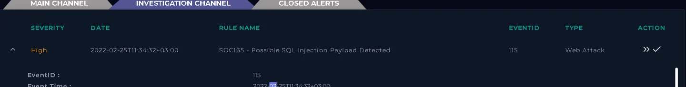
A análise do parâmetro confirmou a presença de um padrão suspeito na
consulta. O parâmetro q contém uma sequência compatível com
uma tentativa de injeção SQL. Isso indica uma tentativa suspeita, mas,
isoladamente, não confirma que a exploração teve sucesso.
3. Verificar o IP de origem
Pesquise o Source IP Address no VirusTotal.
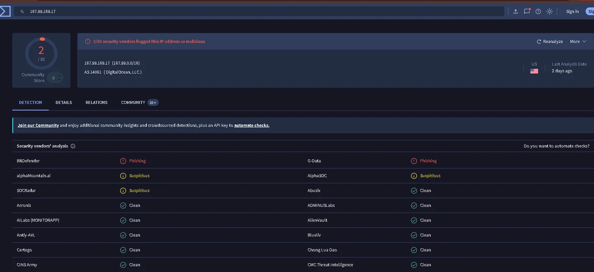
O resultado consultado sinalizou o IP
167[.]99[.]169[.]17 como malicioso. Considere esse dado
como inteligência de apoio e correlacione-o com os registros internos do
incidente.
4. Correlacionar a requisição nos logs
No Log Management, localize a requisição mais recente associada ao IP de origem e confira o horário, o destino, a URL e o resultado.
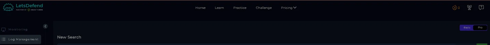
A requisição retornou HTTP 500, indicando um erro interno do servidor. Esse código, por si só, não comprova comprometimento; investigue os logs da aplicação e do banco de dados no mesmo intervalo.
5. Revisar o Case Management
Consulte os registros abaixo no Case Management e use-os para complementar a linha do tempo e o registro do caso.
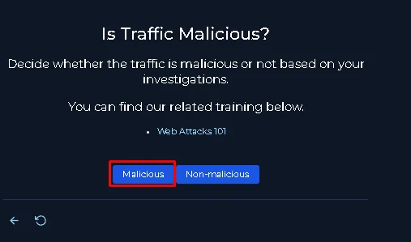
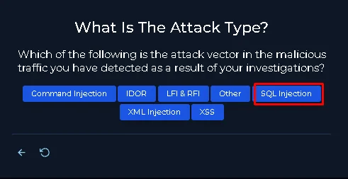
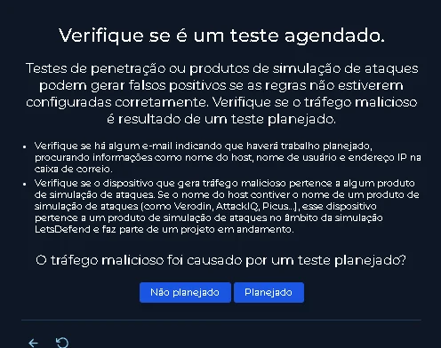
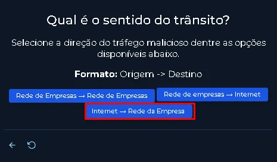
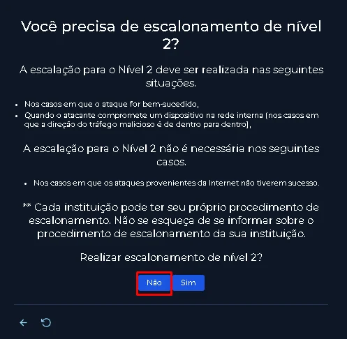
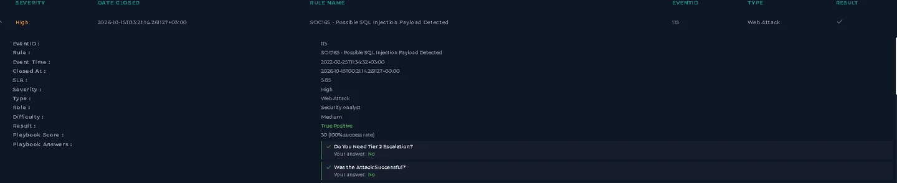
6. Conclusão e ações recomendadas
Conclusão: há evidências de uma possível tentativa
de injeção SQL: a URL contém um payload suspeito, o IP de origem foi
sinalizado pelo VirusTotal e a requisição resultou em HTTP 500. Com os
dados apresentados aqui, não é possível afirmar que houve exploração
bem-sucedida. Próximas ações: - Correlacionar o horário
da requisição com os logs da aplicação, do banco de dados e de
segurança. - Verificar requisições anteriores e posteriores do mesmo IP
e procurar sinais de acesso ou alteração de dados. - Preservar os
registros e atualizar o ticket com a linha do tempo e as evidências. -
Avaliar o bloqueio do IP no firewall conforme o procedimento e a
autorização da equipe; depois, monitorar novas tentativas. A
recomendação original foi bloquear o IP 167[.]99[.]169[.]17
no firewall.
Exercício simulado. Algumas capturas foram recortadas ou tiveram campos ocultados.